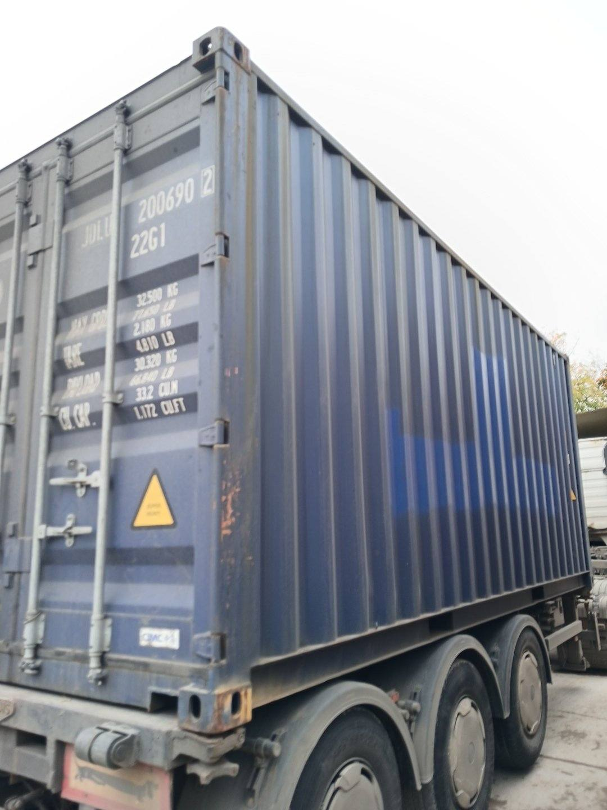
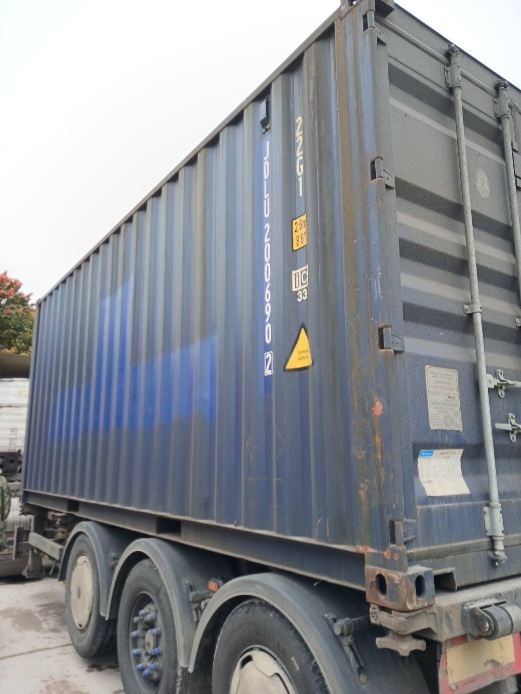
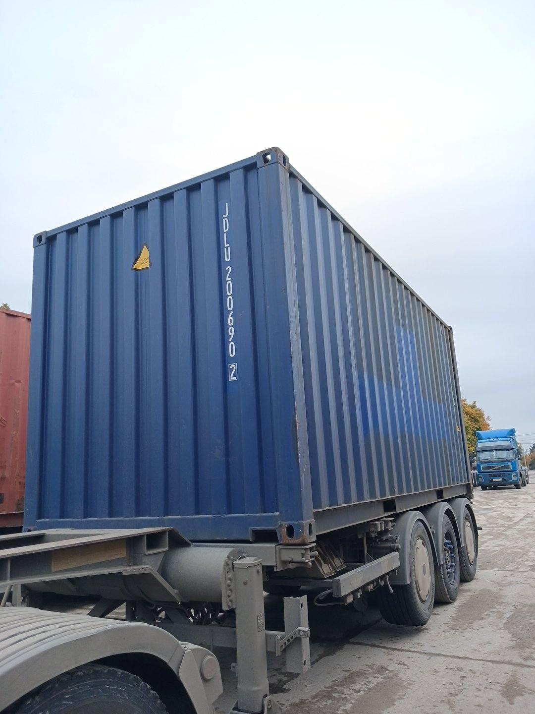
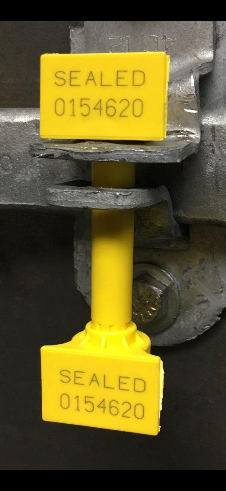

1Doors
1Doors
2Right side
3Left side
4Blank end
5Seal
Printed on the doors. Check digit valid. Read the same in photos 1, 2 and 3.
- Size and type
- 22G1
- Max gross
- 32,500kg
- Tare
- 2,180kg
- Payload
- 30,320kg
- Capacity
- 33.2m³
20 ft, standard height, general purpose
- SealConfident0154620Bolt seal, read from the close-up in photo 5
- PlacardsSuper heavy markingNo DG placard visibleConfident
- Damage6 findings, all cosmeticSurface wear on the doors and both long sidesLikely
Photographed Door endRight sideLeft sideBlank endRoof not seen
Where on the container
20 ft · 5 sections a sideApproximate areas on an illustrative drawing. Not measured, not pixel-precise and not a certified location. The roof was not photographed.
6 suspected findings
CEDEX · ISO 9897
Best interpretation: apparent cosmetic surface wear across the middle of the left door leaf.
What remains uncertain: depth and extent cannot be judged from these photos. Corrosion is the leading damage type, but not probable enough to name.
Seen in photos 1 and 2. Severity is an apparent visual judgement, not a repair verdict.
Mock-up of a five-photo inspection. The ID, size and type, weights and seal number are what is painted in the photos; the outlines and pins on the photo, the damage findings and their wording are placed by hand to show the layout.